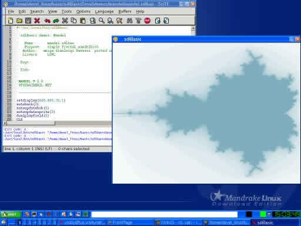
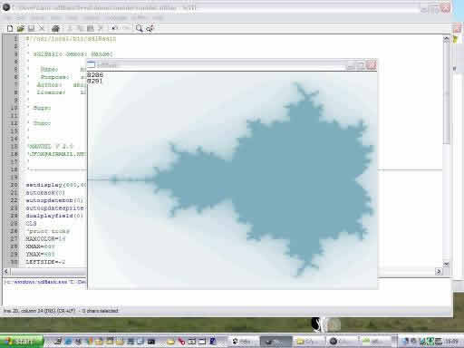
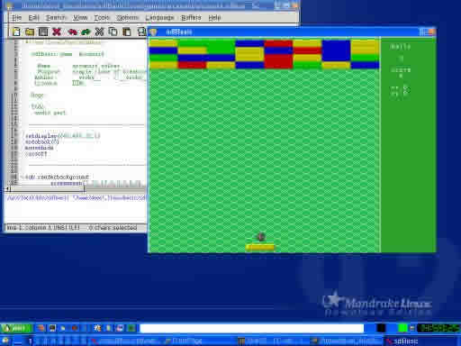
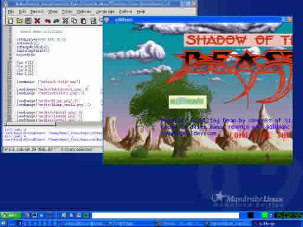

next update is for tomorrow 2004-06-12
it's the last snapshot before a official release
see download section for download the last snapshot
and see state section for read the last improvements.
next snapshot in 2004-05-18




Just mail me.
| last change June 11, 2004 | |||